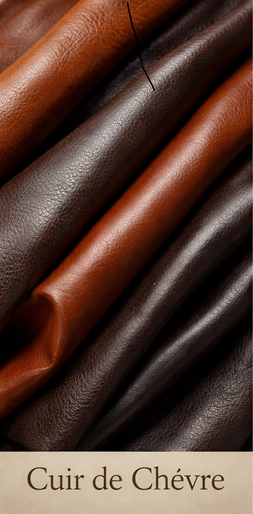
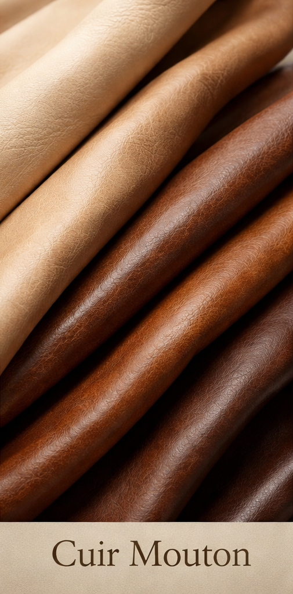
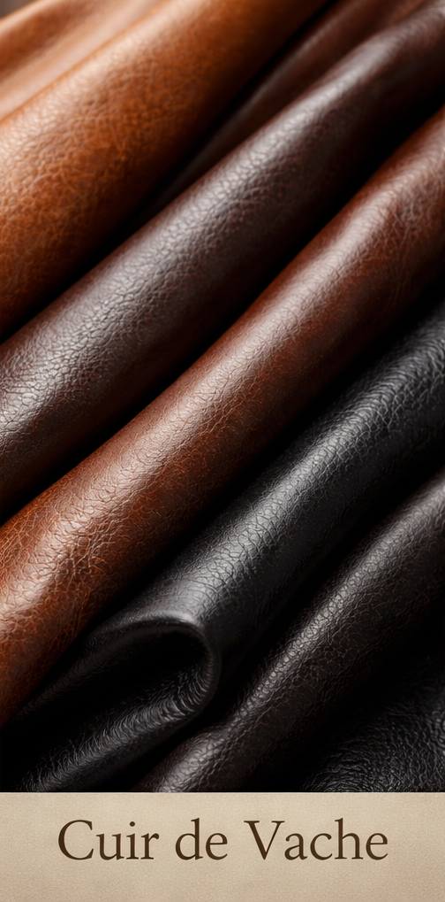
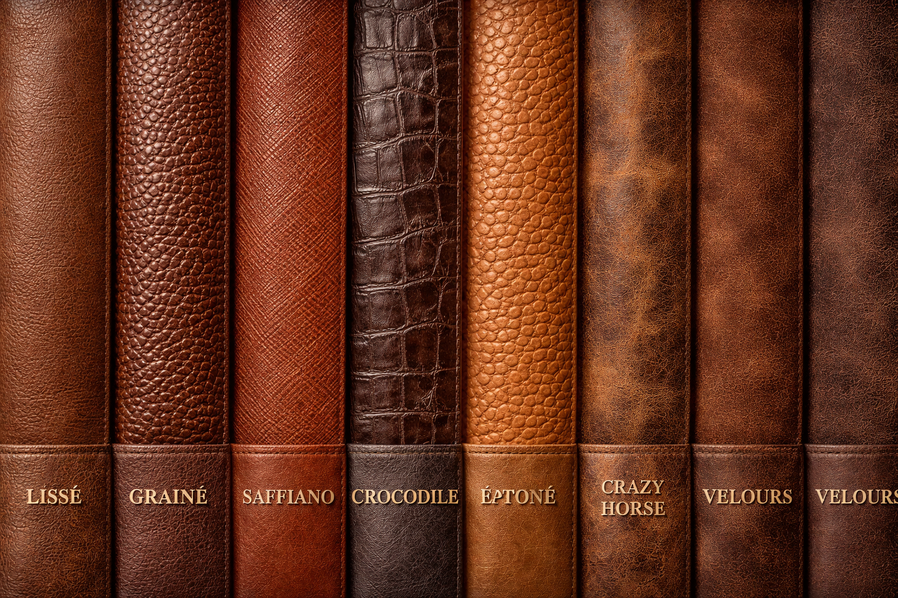
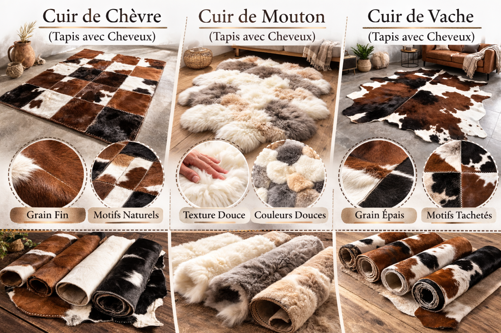

la Tannerie De L'étoile , Depuis 1959
la Tannerie De L'étoile Le Meilleur De Cuir.
L’art Du Cuir, Notre Passion
La Tannerie de l’Étoile, fondée en 1959, est un symbole d’excellence dans le domaine du cuir. Reconnue pour son savoir-faire artisanal unique, elle transforme chaque peau en un cuir noble, durable et raffiné, alliant tradition et modernité. Grâce à des méthodes de tannage méticuleuses et un souci constant de la qualité, la tannerie offre des produits qui incarnent l’élégance intemporelle et le luxe authentique. Chaque création reflète l’engagement de la maison à préserver le patrimoine artisanal tout en répondant aux exigences des amateurs de cuir haut de gamme à travers le monde

🟤 Présentation générale
Le cuir de chèvre est reconnu pour sa finesse, sa résistance et sa souplesse naturelle.
Issu d’un savoir-faire artisanal, notre cuir de chèvre allie tradition et qualité premium.
Un cuir élégant, durable et parfaitement adapté aux exigences modernes.
🟤 Qualité & fabrication
Sélectionné avec soin, notre cuir de chèvre est traité selon des normes strictes de tannage.
Chaque peau est travaillée pour garantir une texture homogène et une finition irréprochable.
La qualité commence à la tannerie.
🟤 Utilisation
Idéal pour la maroquinerie, la chaussure et les articles de luxe.
Un cuir polyvalent qui s’adapte aussi bien aux créations artisanales qu’industrielles.
Parfait équilibre entre légèreté et robustesse.
🟤 Valeur ajoutée
Un cuir naturel qui traverse le temps avec élégance.
La noblesse du cuir de chèvre au service de vos créations.
Quand la matière première devient une signature.
🟤 Slogan (au choix)
L’excellence du cuir, dès l’origine.
La tradition du cuir, la qualité en héritage.
Un cuir d’exception, façonné avec passion.

🟤 Présentation générale
Le cuir de mouton se distingue par sa douceur exceptionnelle et sa souplesse naturelle.
Un cuir léger et agréable au toucher, issu d’un savoir-faire maîtrisé.
L’alliance parfaite entre confort et élégance.
🟤 Qualité & fabrication
Nos cuirs de mouton sont soigneusement sélectionnés et travaillés avec précision.
Un processus de tannage contrôlé garantit une finition douce et homogène.
Chaque peau reflète notre engagement envers la qualité.
🟤 Utilisation
Idéal pour les vêtements, la doublure et les articles nécessitant une grande souplesse.
Un cuir parfaitement adapté aux créations raffinées.
Le choix privilégié pour le confort et la finesse.
🟤 Valeur ajoutée
Un cuir naturellement doux, conçu pour durer.
La finesse du cuir de mouton au service de vos créations.
Quand la douceur devient une matière noble.
🟤 Slogan (au choix)
La douceur du cuir, au naturel.
Un cuir souple, une sensation unique.
Le confort façonné par l’excellence.

🟤 Présentation générale
Le cuir de vache est reconnu pour sa solidité, sa durabilité et son caractère authentique.
Un cuir robuste qui allie force et élégance.
La matière de référence pour des créations durables.
🟤 Qualité & fabrication
Sélectionné avec rigueur, notre cuir de vache est travaillé selon des standards élevés de tannage.
Chaque peau offre une excellente résistance et une finition soignée.
Un cuir pensé pour durer dans le temps.
🟤 Utilisation
Idéal pour la maroquinerie, les chaussures, les ceintures et l’ameublement.
Parfait pour les usages intensifs et les produits haut de gamme.
Un cuir polyvalent adapté aux exigences professionnelles.
🟤 Valeur ajoutée
Un cuir naturel, puissant et fiable.
La force du cuir de vache au service de vos créations.
Quand la robustesse devient élégance.
🟤 Slogan (au choix)
La force du cuir authentique.
Robustesse, qualité et tradition.
Un cuir solide, une valeur sûre.

🟤 Types de grain du cuir
1️⃣ Pleine fleur
Grain naturel intact, sans ponçage.
C’est la meilleure qualité de cuir, très résistant et durable.
Utilisé pour les articles haut de gamme.
2️⃣ Fleur corrigée
Surface légèrement corrigée pour éliminer les imperfections.
Grain plus uniforme et régulier.
Bon équilibre entre qualité et prix.
3️⃣ Grain lisse
Surface lisse et régulière, sans relief visible.
Aspect élégant et moderne.
Idéal pour la maroquinerie et les vêtements.
4️⃣ Grain naturel
Texture naturelle du cuir conservée.
Chaque peau est unique.
Donne un aspect authentique.
5️⃣ Grain embossé
Grain imprimé artificiellement.
Permet d’obtenir différents motifs (crocodile, saffiano, etc.).
Apporte un style luxueux et uniforme.
6️⃣ Nubuck
Cuir légèrement poncé sur la face externe.
Toucher doux et velouté.
Aspect raffiné et élégant.
7️⃣ Suédé (velours)
Cuir travaillé sur la face interne.
Texture douce et mate.
Souvent utilisé pour les chaussures et les vestes.
